전자기기기능장 (2016-07-10 기출문제)
1과목: 임의구분
1. 마이크로폰에 들어오는 음압이 각 주파수에 대한 출력 전압의 관계를 무엇이라 하는가?
- 감도
- 선택도
- 주파수특성
- 지향성
(정답률: 62%)

2. 다음 그림과 같은 555 타이머 회로에서 VCC=9V, R1=10kΩ, R2=15kΩ, CT=10μF, C=0.01μF일 때 출력에 나타나는 방형파의 주파수(f)와 점유율(D : duty ratio)는 얼마인가? (단, 다이오드의 순방향 저항은 0Ω으로 간주한다.)(오류 신고가 접수된 문제입니다. 반드시 정답과 해설을 확인하시기 바랍니다.)
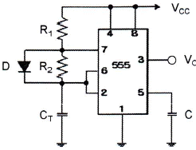
- 주파수(f)≒57Hz, 점유율(D)=40%
- 주파수(f)≒36Hz, 점유율(D)=62.5%
- 주파수(f)≒57Hz, 점유율(D)=62.5%
- 주파수(f)≒36Hz, 점유율(D)=25%
(정답률: 44%)
3. 시퀀스 제어에서 각 구성 부분 및 신호들의 역할로 틀린 것은?
- 명령처리부 : 작업 명령, 검출 신호등을 이용하여 제어 명령을 발생
- 제어명령부 : 제어대상의 신호체계에 맞게 설정
- 표시경보부 : 제어대상의 현재 상태를 나타내거나 경보신호발생
- 작업명령부 : 제어계의 외부에서 주어지는 명령신호
(정답률: 46%)
4. 다음 중 후입선출(LIFO) 동작을 하는 것은?
- RAM
- ROM
- QUEUE
- STACK
(정답률: 59%)
5. 다음 보기의 카르노 맵을 보고 맞는 논리 회로로 옳은 것은?
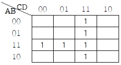
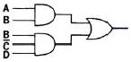
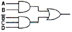
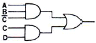
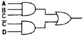
(정답률: 60%)
6. 결합 변압기를 사용하지 않는 B급 푸시풀(Push-Pull) 증폭기에 사용되는 두 개의 트랜지스터는?
- 두 개의 NPN 트랜지스터
- 두 개의 PNP 트랜지스터
- 한 개의 PNP 트랜지스터와 또 다른 한 개의 NPN 트랜지스터
- 한 개의 PNP 트랜지스터와 또 다른 한 개의 MOSFET
(정답률: 58%)
7. π형 필터 전파정류회로에서 부하저항이 감소한다면 리플 전압은?
- 감소한다.
- 증가한다.
- 변화가 없다.
- 주파수가 변화 한다.
(정답률: 53%)
8. 초음파 탐상기의 중요 측정 범위가 아닌 것은?
- 금속의 비중
- 물체의 두께 측정
- 물체 내부의 홈
- 물체 내부의 균열
(정답률: 54%)
9. 증폭도 A가 100인 증폭 회로에 귀환율 β가 -0.01의 부귀환을 걸면 귀환이득은 얼마인가?
- 40
- 50
- 80
- 100
(정답률: 42%)
10. 저음 스피커(우퍼: woofer)의 설명으로 옳은 것은?
- 진동판의 면적이 작을수록 저음 주파수 특성이 좋게 나타난다.
- 코온 진동판의 외경(구경)이 클수록 저역 주파수 특성이 좋아진다.
- 저역 주파수 특성은 자속밀도와 관계가 있다.
- 코온형 진동판의 실효 질량이 작을수록 저역 주파수 특성이 좋아진다.
(정답률: 56%)
11. 듀티 사이클이 0.1이고 주기가 20μs인 펄스의 폭은?
- 2μs
- 1μs
- 0.2μs
- 0.1μs
(정답률: 55%)
12. CAD 시스템의 입력장치가 아닌 것은?
- 키보드
- 라이트 펜
- 마우스
- 플로터
(정답률: 60%)
13. 다음 그림과 같은 회로의 전잘함수는?
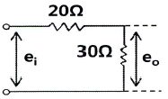
- 0.4
- 0.5
- 0.6
- 0.7
(정답률: 53%)
14. 컴퓨터와 주변장치 사이에 데이터 전송을 수행할 때 입·출력의 준비나 완료를 나타내는 신호가 필요한 비동기식 입·출력 시스템에 널리 쓰이는 방식은?
- Interrupt
- Polling
- Handshaking
- Paging
(정답률: 55%)
15. 디지털 IC 중 복수의 입력 중에서 1개의 출력을 선택해내는 기능을 가진 IC는?
- 멀티플렉서
- 디멀티플렉서
- 디코더
- 인코더
(정답률: 56%)
16. 그림의 특성곡선을 갖는 마이크로폰으로 옳은 것은?
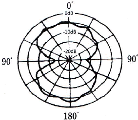
- 가동 코일형
- 리본형
- 코덴서형
- 크리스털형
(정답률: 57%)
17. 그림과 같은 정류 회로에서 입력 전압이 100V일 때 부하저항 R에 나타나는 평균치 전압은 몇 V인가?
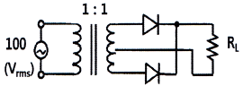
- 90
- 80
- 70
- 60
(정답률: 43%)
18. 시불변 선형 커패시터에 정현파 전압을 가할 때 정상 동작에 대한 설명으로 틀린 것은?
- 전압은 전류보다 위상이 90° 뒤진다.
- 전압과 전류는 같은 주파수의 정현파이다.
- 용량성 리액턴스는 주파수에 비례한다.
- 매우 높은 주파수 신호에 대하여는 거의 단락된 것처럼 동작한다.
(정답률: 47%)
19. 초음파 응용 기기의 기능을 이용하는데 알맞지 않은 속은?
- 공기 속
- 물 속
- 진공인 곳
- 기름 속
(정답률: 59%)
20. 임피던스 함주 Z(S)=
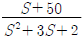
[Ω]로 표시되는 2단자 회로망에서 직류전압 100V를 인가할 경우 회로의 전류는 몇 A 인가?- 4
- 5
- 8
- 10
(정답률: 32%)
2과목: 임의구분
21. 다음 회로에서 출력 전압(Vout)으로 옳은 것은? (단, 전원전압은 100V이고, RL은 100kΩ이다.)
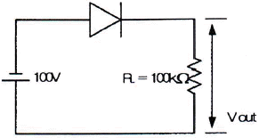
- 100V
- 50V
- 1V
- 0V
(정답률: 41%)
22. 정현파(사인파)의 파형률은?
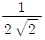
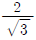
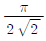
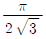
(정답률: 50%)
23. A/D 컨버터의 블록 다이어그램에서 (Z)에 적절한 것은?
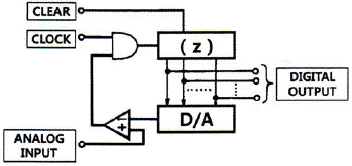
- 시프트 레지스터
- 비교기
- 전가산기
- 카운터
(정답률: 44%)
24. 다음 중 팬 아웃(fan-out)이 가장 적은 논리회로는?
- TTL gate
- RTL gate
- DTL gate
- HTL gate
(정답률: 53%)
25. 하드웨어의 측면에서 컴퓨터의 발전 과정을 바르게 나타낸 것은?
- 집적회로 → 진공관 → 트랜지스터 → 고밀도 집적회로
- 고밀도 집적회로 → 트랜지스터 → 진공관 → 집적회로
- 진공관 → 고밀도 집적회로 → 집적회로 → 트랜지스터
- 진공관 → 트랜지스터 → 집적회로 → 고밀도 집적회로
(정답률: 56%)
26. 다음 기억장치 중에서 액세스 타임(access time)이 가장 빠른 것은?
- 자기디스크
- 자기테이프
- 자기코어
- RAM
(정답률: 53%)
27. 고주파 유전가열에 대한 설명으로 틀린 것은?
- 전원주파수가 높을수록 분자의 방향 전환속도가 빠르게 되어 전력소비도 증가한다.
- 전원을 끊으면 가열은 즉시 정지하여 열의 이용이 쉽다.
- 고주파 용접, 음식물의 조리 등에 응용된다.
- 금속의 표면 가열이 쉽게 이루어진다.
(정답률: 49%)
28. 다음의 오실로스코프 파형의 진폭은 그리드는 2칸이고, 0.5[Volt/Div]이다. 10:1 비의 프로브를 사용할 때 피크-피크(Vp-p) 전압은?
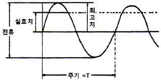
- 0.1 Vp-p
- 1 Vp-p
- 5 Vp-p
- 10 Vp-p
(정답률: 53%)
29. 중앙처리장치 내에서 산술적인 연산과 논리적인 연산을 행하는 장치는?
- ALU
- BUS
- 레지스터
- 제어장치
(정답률: 53%)
30. 음파의 압력에 관련된 양으로서, 강한 음은 큰소리로 약한 음은 작은 소리로 들리는 소리의 요소는?
- 소리의 세기
- 음색
- 소리의 높이
- 파장
(정답률: 49%)
31. 그림과 같은 개폐 접점 회로의 논리식은?
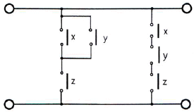
- (x∙y+z)+(x+y+z)
- (x+y)z ∙(x∙y∙z)
- (x∙y+z)∙(x+y+z)
- (x+y)z+(x∙y∙z)
(정답률: 49%)
32. 다음과 같은 증폭기의 전압이득(Av)는?
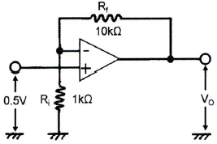
- 5
- 5.5
- 10
- 11
(정답률: 40%)
33. 위상 여유에 대한 안정도 판별법에서 위상 여유 PM>0°일 때 상태는?
- 불안정
- 지속 진동
- 안정
- 관계없음
(정답률: 44%)
34. 전자 CAD에서 부품을 보드 상에 실장하기 위하여 실제 부품의 크기, 핀, 개수, 외곽라인 등을 라이브러리(Library)화 한 것을 나타내는 명칭은?
- Package
- Pattern
- Footprint
- Pad
(정답률: 50%)
35. 다음의 회로는 SCR를 이용하여 히터를 구동하는 회로이다. 회로상의 동작 설명으로 틀린 것은?
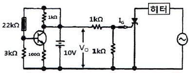
- 써미스터에서 온도를 검출하고 SCR를 사용하여 히터를 제어하는 회로이다.
- 온도가 낮아짐 → V0 상승 → SCR이 ON 상태 → 히터 구동
- 온도가 높아짐 → V0 하강 → SCR이 OFF 상태 → 히터 정지
- 부하에 가하는 전압은 교류의 부(-) 반파만으로 되어 최고의 통전 상태에서도 보통 교류를 가하고 있을 때의 1/4 정도의 전력이 소비된다.
(정답률: 53%)
36. 전극 갭(Gap) 내에 삽입한 물질의 소모 현상을 이용하여 재료를 가공하는 방법은?
- 플라즈마 가공
- 레이저 가공
- 방전 가공
- 전자 빔 가공
(정답률: 47%)
37. 어떤 명령이 실행되기 위해서 가장 먼저 이루어지는 마이크로 오퍼레이션은?
- MBR ← PC
- PC ← PC+1
- IR ← MBR
- MAR ← PC
(정답률: 50%)
38. Vc=25cosωctt[V]의 반송파를 Vs=20cosωst[V]의 신호파로 진폭 변조할 때 변조도는 몇 % 인가?
- 5
- 12
- 50
- 80
(정답률: 40%)
39. 다음 중 압전효과를 이용한 것이 아닌 것은?
- 수정 진동자
- 크리스탈 픽업
- 초음파 발진기
- 전자냉동기기
(정답률: 49%)
40. 차동증폭회로에서 차동전압 이득이 10000이고 동상전압 이득이 0.1일 때 동상신호제거비(CMRR)는 몇 [dB] 인가?
- 80
- 100
- 120
- 140
(정답률: 56%)
3과목: 임의구분
41. Flip Flop의 기능은?
- gate기능
- 기억기능
- 증폭기능
- 전원기능
(정답률: 55%)
42.
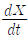
+3X=5 의 라플라스 변환을 하면? (단, X(0+)=0이다.)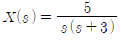
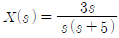
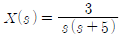
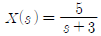
(정답률: 39%)
43. 프리앰프에서 음반 또는 녹음테이프의 특성을 보정하고, 카트리지 또는 헤드의 특성을 보정해주는 역할을 하는 것은?
- 톤 조정 회로
- 등화 앰프
- 플래트 앰프
- 음량 조정 회로
(정답률: 48%)
44. 녹음기 회로에서 전체의 주파수 특성을 평탄하게 위해서 주파수 보상을 하는데 녹음시에는 어떤 주파수의 특성을 보상하는가?
- 중간주파수 보상
- 잡음 보상
- 저역 보상
- 고역 보상
(정답률: 44%)
45. 동기식 변복조기(Synchronous MODEM)에서 주로 사용하는 변조 방법은?
- ASK(Amplitude Shift Keying)
- PSK(Phase Shift Keying)
- PCM(Pulse code Modulation)
- FSK(Frequency Shift Keying)
(정답률: 37%)
46. 기억장치(memory)에서 Register로 또는 Register에서 기억장치(memory)로 옮기는 명령어는 무엇인가?(문제 오류로 실제 시험에서는 1, 4번이 정답 처리 되었습니다. 여기서는 1번을 누르면 정답 처리 됩니다.)
- store
- add
- branch
- load
(정답률: 58%)
47. 7진 카운터를 설계하기 위하여 필요한 플립플롭의 수는?
- 1
- 3
- 2
- 4
(정답률: 51%)
48. 다음과 같은 R-L 회로에서 동작 전류가 10mA일 때, t=0에서 스위치를 닫은 후 대략 몇 초 후에 동작을 하는가? (단, ln2=0.693이다.)
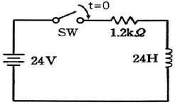
- 0.014
- 0.028
- 0.14
- 0.28
(정답률: 42%)
49. 16진수 3E의 BCD 표현으로 옳은 것은?
- 00111110
- 111110
- 0110 0010
- 0011 0010
(정답률: 34%)
50. 메모리에 데이터를 넣는 것은?
- 판독(read)
- 기록(write)
- 제어(control)
- 카운트(count)
(정답률: 63%)
51. 자동제어에서 인디셜 응답을 조사할 때 입력에 어떤 파형을 가하는가?
- 스텝파
- 펄스파
- 사인파
- 톱니파
(정답률: 50%)
52. 녹음 때에는 고역을, 재생 때에는 저역을 각각의 증폭기로 보정하여 전체를 평탄한 특성으로 만드는 것은?
- 등화기
- 클리핑
- 블랭킹
- 클램핑
(정답률: 49%)
53. 256워드가 있고, 4비트의 길이를 가진 메모리의 용량은?
- 256비트
- 512비트
- 1024비트
- 2048비트
(정답률: 57%)
54. 인터럽트 처리에서 I/O 장치들의 우선순위를 지정하는 이유로 옳은 것은?
- 인터럽트 발생 빈도를 확인하기 위하여
- 인터럽트 처리 루틴의 주소를 알기 위하여
- CPU가 하나 이상의 인터럽트 처리를 하지 못하게 하기 위하여
- 여러 개의 인터럽트 요구들이 동시에 들어올 때 그들 중 하나를 택하기 위하여
(정답률: 55%)
55. 샘플링에 관한 설명으로 틀린 것은?
- 취락 샘플링에서는 취락 간의 차는 작게, 취락 내의 차는 크게 한다.
- 제조공정의 품질특성에 주기적인 변동이 잇는 경우 계통 샘플링을 적용하는 것이 좋다.
- 시간적 또는 공간적으로 일정 간격을 두고 샘플링하는 방법을 계통 샘플링이라고 한다.
- 모집단을 몇 개의 층으로 나누어 각 층마다 랜덤하게 시료를 추출하는 것을 층별 샘플링이라고 한다.
(정답률: 40%)
56. 표준시간 설정 시 미리 정해진 표를 활용하여 작업자의 동작에 대해 시간을 산정하는 시간연구법에 해당되는 것은?
- PTS법
- 스톱워치법
- 워크샘플링법
- 실적자료법
(정답률: 50%)
57. 다음 내용은 설비보전조직에 대한 설명이다. 어떤 조직의 형태에 대한 설명인가?
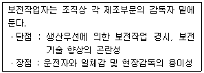
- 집중보전
- 지역보전
- 부문보전
- 절충보전
(정답률: 48%)
58. 다음은 관리도의 사용 절차를 나타낸 것이다. 관리도의 사용 절차를 순서대로 나열한 것은?
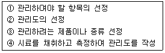
- ㉠→㉡→㉢→㉣
- ㉠→㉢→㉣→㉡
- ㉢→㉠→㉡→㉣
- ㉢→㉣→㉠→㉡
(정답률: 57%)
59. 이항분포(binomial distribution)에서 매회 A가 일어나는 확률이 일정한 값 P일 때, n회의 독립시행 중 사상 A가 x회 일어날 확률 P(x)를 구하는 식은? (단, N은 로트의 크기, n은 시료의 크기, P는 로트의 모부적합품률이다.)
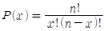
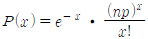
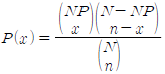
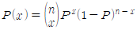
(정답률: 48%)
60. 다음 표는 어느 자동차 영업소의 월별 판매실적을 나타낸 것이다. 5개월 단순이동 평균법으로 6월의 수요를 예측하면 몇 대인가?
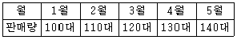
- 120대
- 130대
- 140대
- 150대
(정답률: 54%)